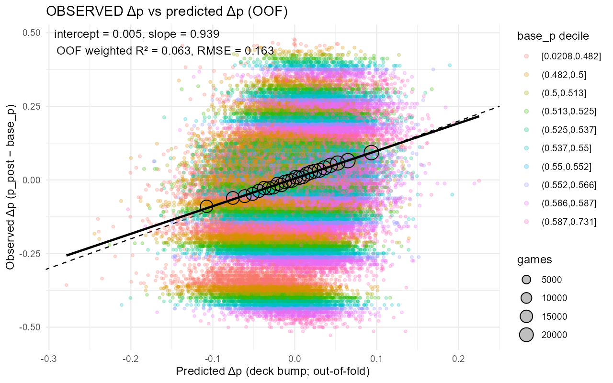

Identifying Causal Deck-Construction Effects in High-Dimensional Draft Environments
abstract
Booster draft is a play mode of many trading card games where players select cards from a limited pool and construct a deck to later compete with. Deck strength in limited formats emerges from three forces: a player’s baseline win propensity (their skill), the composition of the deck they draft, and randomness in gameplay. these forces are entangled through the causal structure
W ← P → D → W,
where P is player skill, D is deck composition, and W is win outcome.
this article develops a method to identify the causal effect of deck composition on win rate in a high-dimensional setting using historical draft data for Magic: The Gathering (≈400 card features, ≈90k draft logs), despite strong confounding by skill. the approach combines hierarchical shrinkage, per-player baseline win estimation, high-dimensional modeling of deck performance, and simulation-based calibration. results show that naive regressions overstate the value of synergistic cards for highly skilled players, while the corrected estimator recovers a stable “deck bump” effect attributable to deck construction alone.
1. introduction
predictive models for limited formats (e.g., xgboost, neural networks) estimate how good a deck will perform. they do not isolate why. in games like magic: the gathering, draft decisions couple tightly to player skill: stronger players select higher-value cards, commit earlier, navigate signals better, and construct smoother curves. this creates a persistent confounding problem:
- deck composition
Dcorrelates with skillP,
Palso causes better win resultsW,
- so naïve models inflate the apparent value of cards favored by strong players.
i treat the draft ecosystem as a high-dimensional causal inference problem. the goal is to estimate
E[W | do(D)]
rather than E[W | D], i.e., isolate the effect of deck construction itself.
2. causal structure
2.1 dag
P ─────▶ W
│ ▲
│ │
└──────▶ D ─────▶ W2.2 interpretation
- P (player skill) affects both deck strength and win rate.
- D (deck features) is high-dimensional (~400 card features and counts).
- W (match outcome) is binomial (best-of-3 events summarized to match winrate).
2.3 Estimand
the target is the average causal effect (ACE) of deck composition \(d_1\) relative to a baseline deck \(d_0(P)\) for a player of skill \(P\):
\[ \tau(d_1) = E_p [E[W \mid do(D = d_1), P] - E[W \mid do(D = d_0(P)), P]]. \]
Because direct intervention on deck composition is counterfactual, this estimand is identified via adjustment for player skill. More concretely, it represents the difference in expected win rate caused by forcing a player of skill \(P\) to use \(d_1\) instead of the typical deck \(d_0(P)\) drafted by players of that same skill.
Under the assumed directed acyclic graph (DAG) this estimand is identified because conditioning on \(P\) blocks all backdoor paths from \(D\) to \(W\), \(D\) has no children other than \(W\) , and there are no unobserved confounders of the \(D \rightarrow W\) relationship after adjusting for \(P\).
It is important to clarify what this estimator is not: It is not the effect of drafting deck \(d_1\), it is not the effect of the player’s drafting choices, and it is not the effect of the deck conditional on the archetype. Rather, it isolates the causal contribution of the final realized deck composition itself \(D\), holding player skill fixed.
3. baseline win propensity
I estimate per-player baseline skill via a hierarchical beta-binomial model across historical drafts:
\[ W_i \sim \text{Binomial}(n_i, p_i), \\ p_i \sim \text{Beta}(\alpha,\beta). \]
this shrinks noisy players toward the population mean while giving stable posteriors for grinders. the result is a baseline win probability \(p_{\text{base}, i}\) for each player that approximates the \(P \to W\) path.
4. modeling deck-driven win probability
4.1 high-dimensional deck model
i build a model
\[ \hat{p}_{\text{deck}} = f(D), \]
where \(D\) is the deck composition after construction (mana curve, color identity, card counts, rares, removal density, synergy flags, diminishing-returns interactions, etc.). xgboost handles sparsity, nonlinearity, and interactions.
cross-validation is grouped by player id to avoid leakage of skill.
4.2 deck bump
the deck’s causal contribution is operationalized as:
\[ \text{deck_{bump}} = f(D) - p_{\text{base}}. \]
this removes the direct effect of \(P \to W\) and isolates the \(D \to W\) path.
in quasi-random drafts, residual confounding is small.
5. Identifiability and simulation tests
A. What would perfect prediction would look like under the 7–3 stop rule?
Before discussing any fitted model, it is useful to ask: If we actually knew the truth how good would our predictions about the deck be? Assume we know, for each deck, its true match win probability ( p ) and precisely how the underlying components contribute to it. Even in this “oracle” setting, a draft tournament run does not show us ( p ) directly. Instead, each deck is run through a truncated tournament where the run is stopped after accumulating either 7 wins or 3 losses. We can observe only the final record and from that compute an empirical win-rate for the deck and we can approximate the skill level of the player piloting the deck. This stopping rule injects noise. A perfect predictive model cannot remove this noise; it can only sit underneath it. Then the key question of interest is given these limitations on observations is how close to truth about net deck effect and bump can we get?
To study this, I built a generative simulator that creates a synthetic draft ecosystem with full control over the “true” underlying quantities. The simulator is intentionally simple, only five cards exist but it captures the essential causal structure. Each simulated player has a latent skill value which determines their baseline win probability \(p\). The player’s underlying skill influences which cards the player adds to their decks, real players don’t pick cards at random and vary in their abilities to assess the quality of cards. Each card has an intrinsic likelihood of being selected and the probability of selection is modified by the player’s skill. High skill players will select win-rate increasing cards more often than low skill players. This allows the simulation to inject confounding of the type \(P\) \(\rightarrow\) \(D\) \(\rightarrow\) \(W\), \(P\) \(\rightarrow\) \(W\) that we see in real draft data.
The deck composition then produces a true deck effect. Once the draft is simulated the deck’s composition is run through a structural function that generates a true “deck bump”, this can be interpreted as a modifier to the player’s baseline win probability. This function considers the individual card strengths, interactions and anti-synergies between subsets of cards, skill-dependent effects (e.g. some complicated card may be misplayed frequently by low skill players), and an upper bound on how much a deck can add or subtract from the baseline skill. These elements produce the true deck effect \(\Delta p_{deck}\) .
The baseline skill and the true deck effect combine to create the true match win-rate probability: \(p_{true} = logistic(skill) + \Delta p_{deck}\)
In a real draft this value would be invisible.
Next, the Magic Arena 7W - 3L best-of-one tournament logic is applied. Each deck is run through the same truncated process that characterizes the Premier Draft structure. At each stage of the tournament the outcome of the match is determined by \(p_{true}\) and stopped when either 7 wins are reached or 3 losses. A simplifying assumption i make is that \(p_{true}\) is constant throughout the run, in reality this is not the case due to Arena’s underlying matchmaking algorithm. This process produces an observed win rate, what we would see in practice when analyzing real draft data. Our observed deck bump would then be:
\(\Delta p_{obs} = \hat p_{MLE} - p_{baseline}\)
Now that we know the ground truth we can ask “How well does a model recover the true deck effect when using what is observable?”, “What is the best possible \(R^2\) any model could ever hope to achieve?” , “How much does the stopping rule distort the relationship between \(\Delta p_{true}\) and \(\Delta p_{obs}\)?”. “What fraction of the variance is irreducible noise?”. These quantities define the upper bound on model performance.
Findings
To answer the question “How well can a model recover the true deck bump effect when it only has access to observable data?”, I generate a training and test set of 20,000 simulated decks. Each deck has a known underlying win-probability bump \(\Delta p_{true}\) but the model sees only what would be available in real draft data: deck composition, player’s baseline win-rate (a proxy for skill), and the final 7-3 run record. From these it can form the observed bump \(\Delta p_{obs} = p_{MLE} - p_{base}\) , which is a noisy quantity that we would normally try to learn from.
I train an XGBoost model to predict \(\Delta p_{obs}\) from deck composition and player skill, then evaluate predictions on the held-out test set by comparing \(\Delta p_{pred}\) against the ground truth \(\Delta p_{true}\). Under these conditions the model performs extremely well. The regression of \(\Delta p_{pred}\) on \(\Delta p_{true}\) is tightly concentrated around the identity line (Figure 1) demonstrating that the model successfully learned the true deck effect from \(\Delta p_{obs}\).
This result reveals an important result: The modeling strategy is capable of capturing the causal contribution of deck contribution to win probability \((D \rightarrow W)\) when the signal is available.
 Figure 1. XGBoost achieves high fidelity recovery of the true deck effect Δp under full observability.
Figure 1. XGBoost achieves high fidelity recovery of the true deck effect Δp under full observability.
Crucially, this near-perfect recovery is unobservable in real data because Δpₜᵣᵤₑ is never seen. The only outcome we observe is the result of the truncated 7-3 Arena record, which is a very noisy proxy for deck strength. This leads to the second question: What is the best possible \(R^2\) that any model could hope to achieve?
To answer this I simulate an idealized scenario where the true deck win probability \(\Delta p_{true}\) is known exactly. I repeatedly run each deck through the 7-3 stopping rule to generate the corresponding observed deck bump \(\Delta p_{obs} = p_{MLE} - p_{base}\) . I then fit the best possible linear model \(\Delta p_{obs} \sim \Delta p_{true}\) allowing both the intercept and slope to be estimated freely. This regression represents the maximum recoverable signal contained in the observable outcome.
Even with perfect knoweldge of the underlying win-rate, the best achievable \(R^2\) is only about .06 (Figure 2). This seemingly low value is due to the intrinsic variance injected by the 7-3 tournament structure. The early stopping rule overwhelms the true effect with noise leaving only a small fraction identifiable from the observable results.
 Figure 2. Identifiability limit imposed by the Arena 7-3 stopping rule.
Figure 2. Identifiability limit imposed by the Arena 7-3 stopping rule.
Each point represents a simulated deck with known true win-rate bump \(\Delta p_{true}\) and the corresponding observed bump \(\Delta p_{obs}\) obtained after running the deck through a tournament. The solid line is the slope of the best fitting linear regression model. The dashed line indicates the identity. With perfect knowledge the maximum achievable \(R^2\) is about .06. This reflects the intrinsic variance introduced by the tournament structure.
6. empirical results on 17lands FIN format
I now turn to estimating the causal effect of deck composition on player win rate using real Arena data. Throughout this section, I retain the causal framework and estimand defined in Section 2.
6.1 17lands Premier Draft Data
I obtained Premier Draft records for the Final Fantasy set from 17Lands (https://www.17lands.com/public_datasets). The dataset contains 77,864 complete anonymized draft runs, final deck compositions over 363 unique cards, player win-rate buckets, and player game-count buckets. The median player win rate is 0.54, reflecting that the typical 17Lands user is an above-average Arena player.
6.2 calibration
Using the same analytic pipeline as in the simulation study, I evaluated the ability of deck composition to predict the observed deck-induced win-rate bump using five-fold cross-validation. The model was trained to predict the skill-adjusted outcome proxy defined in Section 2, and all reported diagnostics are based on out-of-fold predictions.
 Figure 3. Predicted deck bump vs observed deck bump effect using 5-fold cross-validation.
Each point corresponds to a realized deck, with the predicted deck effect \(\Delta_{pred}\) plotted against the observed bump \(\Delta p_{obs}\), defined as the difference between the posterior mean win probability from the realized 7–3 tournament run and the player's baseline win rate. Points are sized by the number of games played in the run and colored by player win-rate decile. The solid line shows the best-fitting weighted linear regression, while the dashed line denotes the identity.
The out-of-fold \(R^2\) is approximately 0.06, indicating that deck composition explains a modest but non-negligible fraction of the variance in the skill-adjusted outcome proxy. Importantly, this magnitude closely approaches the empirical recoverability limit observed in the simulation study, where outcome censoring and binomial variance impose a hard ceiling on explainable variance. The agreement between simulated and real-data performance suggests that the model captures most of the deck-level signal that is practically identifiable under the Arena 7–3 tournament structure.
6.3 player-strength correction
card-level marginal value curves differ substantially after accounting for \(P\). for example:
- high-synergy cards appear overpowered in naïve models because skilled players draft them disproportionately.
- after correction, the value curve flattens, revealing the actual diminishing returns.
(insert sahagin figure here when ready.)
6.4 per-card marginal curves
for each card \(c\):
\[ m_{c}(n) = f(D_{c}=n) - f(D_{c}=n-1), \]
revealing synergy pockets and diminishing returns without skill-induced distortion.
7. interpretability
i compute:
- model-agnostic SHAP values for card contributions,
- synergy matrices using pairwise deltas,
- archetype embeddings based on deck-bump profiles.
together, these reveal:
- which archetypes benefit most from high-skill pilots,
- which cards have intrinsic value vs “skill halo” distortion,
- how diminishing returns align with gameplay heuristics.
8. Discussion
Implications and use cases
The primary result of this study is that the causal contribution of deck composition to win rate can be isolated from player skill by conditioning on an approximate skill proxy. Despite heavy outcome censoring and substantial noise at the level of individual draft runs, deck composition explains a measurable and generalizable component of performance once player baseline win rate is accounted for. This demonstrates that “how strong a deck is” is a well-defined causal quantity, distinct from how well a player pilots it, and that it can be estimated from observational draft data.
The estimated deck effect is not a measure of drafting ability or in-game decision making, but rather the expected change in win probability by using one deck composition instead of another for a player of a fixed skill.
Utility for players and analysts
For players of card games, this framework is a principled way to quantify the contribution of specific cards or combinations of cards to deck strength, independent of player proficiency. While the model is trained on completed decks rather than live draft states, the resulting estimates can inform card evaluation, deck construction decisions, and post-draft analysis. Importantly, the modest variance explained by deck composition reflects the fundamental limits imposed by tournament structure and randomness, rather than a lack of signal in the cards themselves.
Methodological Contribution: Causal inference in High Dimensions
More broadly, this work serves as an applied example of causal inference in a high-dimensional setting, where the treatment variable, deck composition, consists of hundreds of correlated components. By explicitly defining the estimand, leveraging a causal graph to justify adjustment, and validating recoverability through simulation, this approach illustrates how flexible machine-learning models can be used as estimators of causal quantities without conflating prediction with causation. The results highlight the importance of separating identifiability, estimation, and evaluation, particularly when outcomes are noisy and partially observed.
Implications for Game Design and Balance Analysis
Finally, this framework may be useful for game designers and balance teams. By estimating the causal effect of deck composition independent of player skill, designers can identify cards or combinations that systematically over- or under-perform across the player base, rather than relying on raw win rates that are confounded by player selection effects. More generally, the approach provides a template for analyzing competitive systems in which player ability and strategic choices are tightly coupled, but where observational data are abundant.
Recovery of the Deck Effect under Realistic Observation Noise
Although the estimand defined in 2.3 is model agnostic, its recoverability in practice depends on the information constraints imposed by the Arena tournament structure. In particular, the latent per-game win probability \(p(D,P)\) is never directly observed. Instead we observe only a stopped 7-3 fun outcome, which induces substantial variance and bias in any estimator derived from realized wins and losses. This censoring mechanism imposes a fundamental noise floor on inference that no modeling choice can eliminate.
To assess the practical limitations of these constraints, I constructed a simulated environment consistent with the assumed DAG, in which the true deck effect and baseline player skill are known, but only noisy proxies which mirror the real Arena data, are observed. This allows us to separate limitations due to statistical identifiability from those imposed by the observation process itself.
XGBoost as a Function Approximator for the G-Formula
Within the simulated environment, I use XGBoost as a flexible function approximator to learn the mapping implied by the g-formula:
\((D,P) \rightarrow E[W | D,P]\)
and, by extension, the skill-adjusted deck effect. XGBoost is not essential to the estimand itself; instead it serves as a practical stand-in for a broad class of nonlinear models capable of capturing interactions nd saturation effects in high-dimensional deck representations.
The role of the model in this context is not to introduce causal structure, but to approximate a conditional expectation that s already causally identified by adjustment for player skill. Any sufficiently expressive learner with adequate regularization could, in principle, serve the same purpose.
Performance relative to the noise ceiling
A key result of the simulation is that XGBoost achieves predictive performance on the observed win-rate bump that approaches the theoretical ceiling implied by the 7-3 stopping rule. That is, accuracy is close to what would be attainable even if the true latent deck effect were known exactly and only the noisy outcome remained.
This finding is important for interpretation. Remaining errors should not be attributed to model inadequacy, but rather to irreducible uncertainty introduced by tournament censoring and finite sample sizes. In this sense, the model’s performance provides an empirical upper bound on how well the deck estimand can be recovered from Arena style data.
Implications for Real World Arena Data
Because the true deck effect is unobservable in real data, simulation serves as the only setting in which recovery can be directly validated. The results suggest that under realistic conditions, a substantial fraction of the causal signal attributable to deck composition can be recovered. This has two implications. First, improvements in model architecture alone are unlikely to yield large gains beyond this point. Second, alternative data sources or experimental design would be required to meaningfully reduce uncertainty around deck effects.
Scope and Intended Use of the Estimator
Finally, it is important to emphasize the scope of the resulting estimator. The model targets the causal contribution of the final realized deck composition, holding player skill fixed. While this quantity can be used as a heuristic signal during a live draft, it is not optimized for decision-making under partial information. Live draft guidance is better framed as a sequential decision problem, where the relevant object is the expected downstream value of an action given the evolving draft state, rather than the value of the terminal deck alone.
9. limitations
- late-draft picks are not fully random.
- synergy leakage into the baseline estimate can occur for player specialists.
- cross-set generalization is not guaranteed.
10. conclusion
isolating \(D \to W\) in high-dimensional decision systems is feasible when skill is explicitly modeled and posterior adjustments isolate the structural contribution of deck composition. this produces interpretable, stable estimates of card and deck value and serves as a general causal-inference template.
references
- pearl, j. causality.
- imbens, g., rubin, d. causal inference for statistics, social, and biomedical sciences.
- chen, t., guestrin, c. (2016). xgboost: a scalable tree boosting system.
- 17lands.com performance and draft log data.